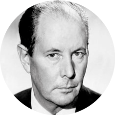
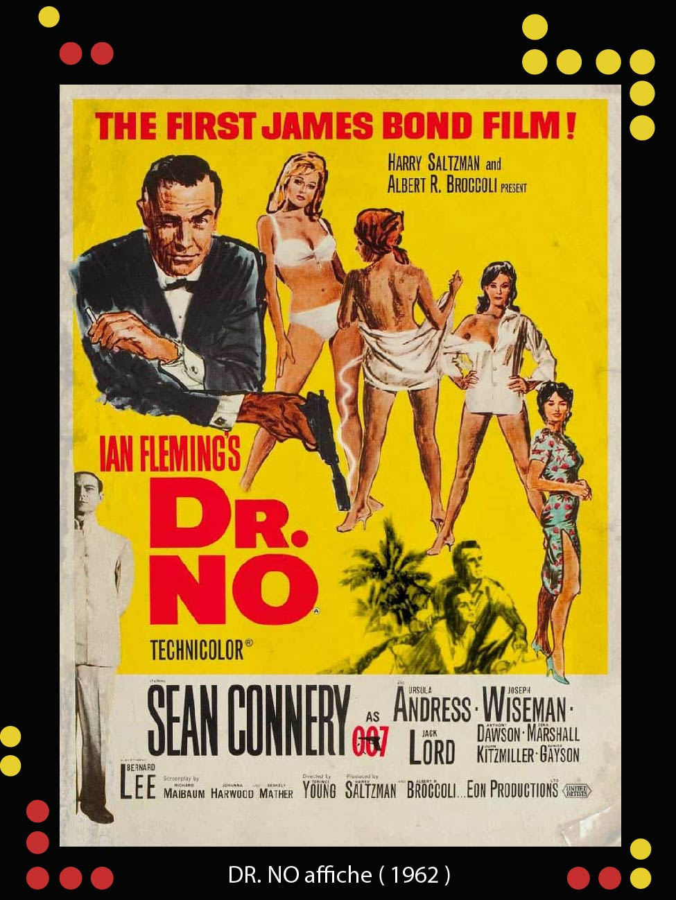

JOHN BARRY
John Barry est né le 3 novembre 1933 à York Angleterre et mort le 30 janvier 2011 était un compositeur et chef d'orchestre britannique de musique de film.
Il a composé les partitions de onze des films de James Bond entre 1963 et 1987, ainsi que l'arrangement et l'interprétation du «James Bond Theme» pour le premier film de la série, DR. NO.
DR. NO est un film d'espionnage de 1962 réalisé par Terence Young. C'est le premier film de la série James Bond. Mettant en vedette Sean Connery, Ursula Andress, Joseph Wiseman et Jack Lord, il a été adapté par Richard Maibaum, Johanna Harwood et Berkely Mather du roman de 1958 du même nom de Ian Fleming.
Dans ce film qui a lancé la saga James Bond, l'agent 007 (Sean Connery) affronte le mystérieux DR NO, un génie scientifique déterminé à détruire le programme spatial américain. Alors que le compte à rebours du désastre commence, Bond doit se rendre en Jamaïque, où il rencontre la belle Honey Ryder (Ursula Andress), pour affronter un méchant mégalomane.
JAMES BOND THEME
Le «James Bond Theme» est le principal thème musical des films de James Bond et a figuré dans tous les films d' Eon Productions Bond depuis DR. NO , sorti en 1962. La pièce a été utilisée comme fanfare d'accompagnement de la séquence du canon du pistolet dans chaque film de James Bond.